In this codelab, we'll walk through the process of sending a message to Slack from a Mule application using the Slack Connector. You'll learn how to easily create an app in the Slack API console. Lastly, in Anypoint Studio, you'll create a simple flow that sends a canned message to a channel in Slack.
Before we can send a message to Slack from MuleSoft, we need to create a Slack App. Navigate to https://api.slack.com and click on Create App
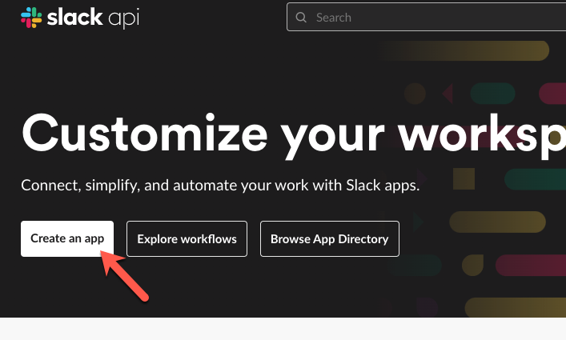
In the next screen, click on From an app manifest
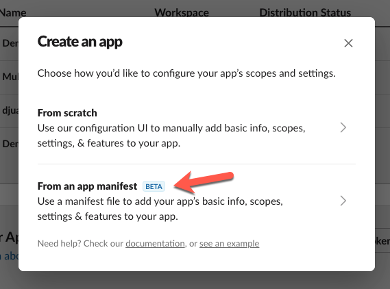
Select the workspace you want to publish the app to and click on Next.
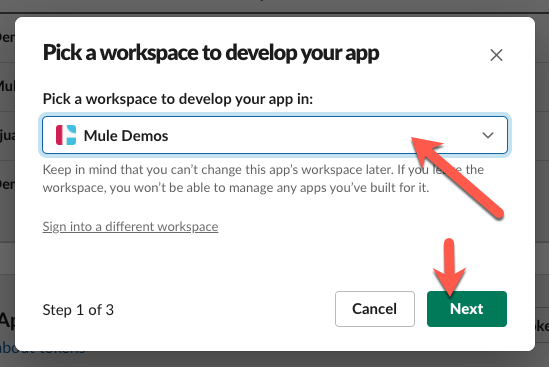
In the next step, paste the following over the default app manifest:
display_information:
name: Codelab Demo App
features:
bot_user:
display_name: Codelab Demo App
always_online: true
oauth_config:
redirect_urls:
- https://localhost:8082/callback
- https://0.0.0.0:8082/callback
- https://127.0.0.1:8082/callback
scopes:
bot:
- chat:write
- channels:read
- incoming-webhook
settings:
org_deploy_enabled: false
socket_mode_enabled: false
token_rotation_enabled: false
It should look like the screenshot below before you click on Next
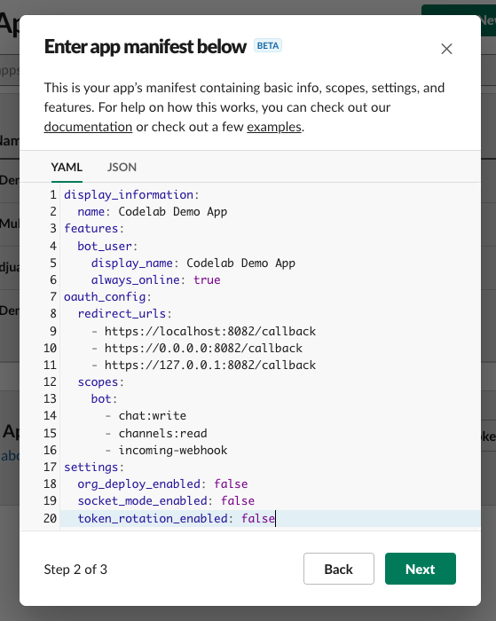
In the last step, click on Create
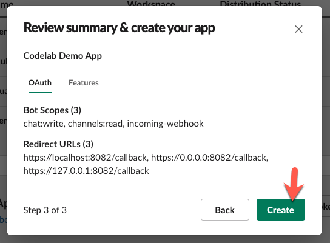
Before we can use the Slack App, we need to install it into a Workspace. Click on Install to Workspace.
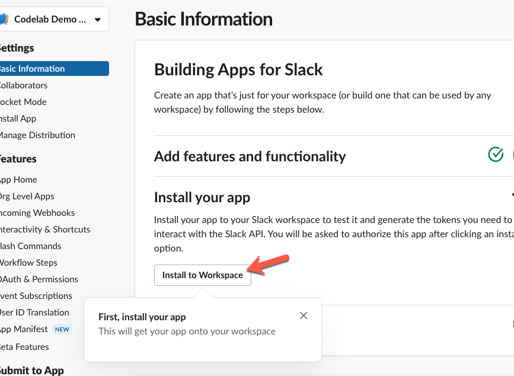
Select a channel to allow the app to post to by default and click on Allow.
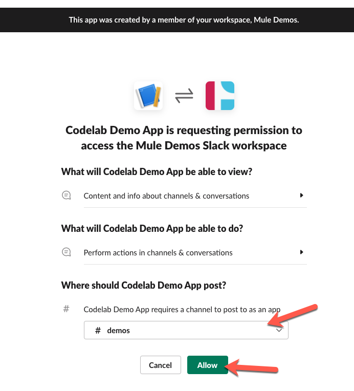
You'll return back to the Basic Information section of your newly created app. In the App Credentials section, you'll want to copy down the Client ID and Client Secret. We'll need these to configure the Slack Connector in Studio later.
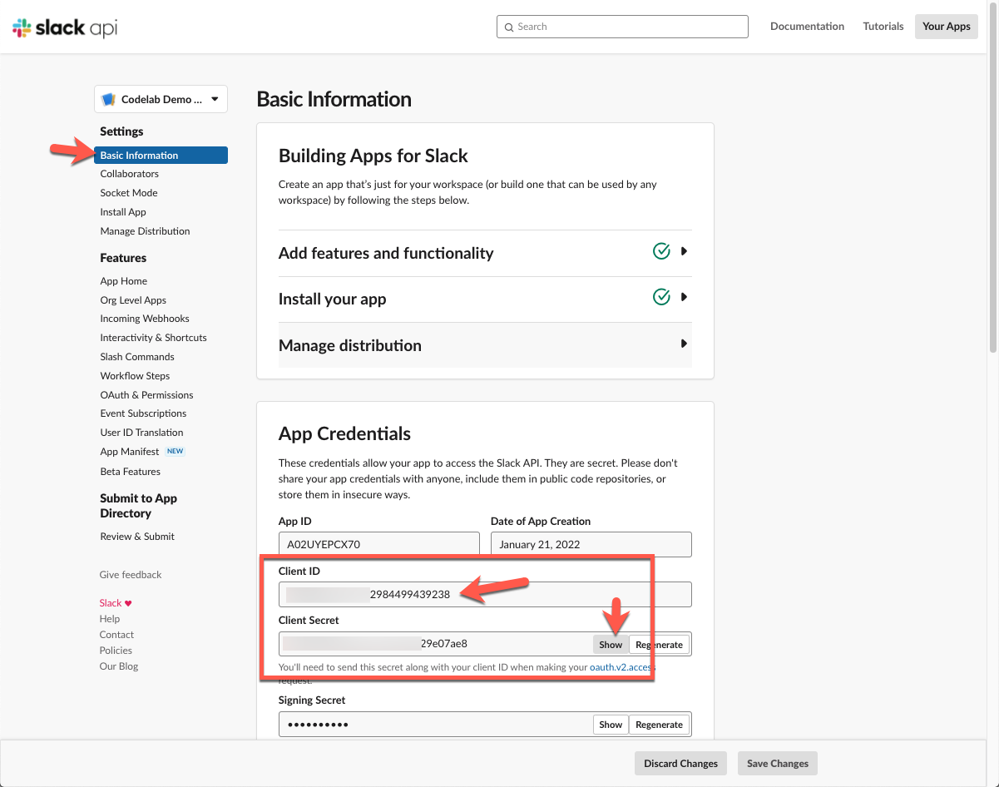
Now that we've set up the Slack App, let's create the Mule application. Switch over to Anypoint Studio and create a new project by going to File > New > Mule Project
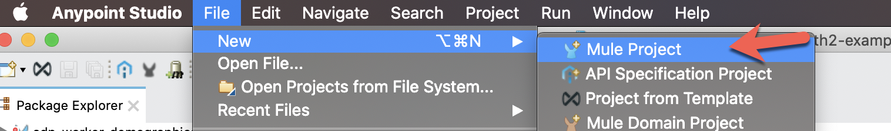
In the New Mule Project dialog window, give the project a name (e.g. slack-example-mule4) and click on Next.
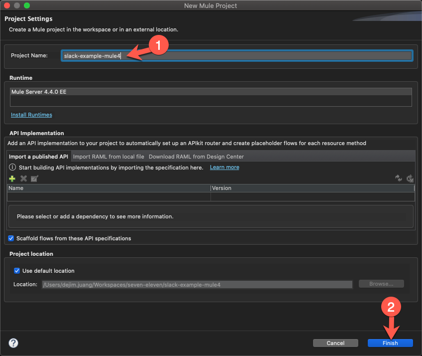
Before we build our flow, we need to add the Slack module. In the Mule Palette, click on Search in Exchange
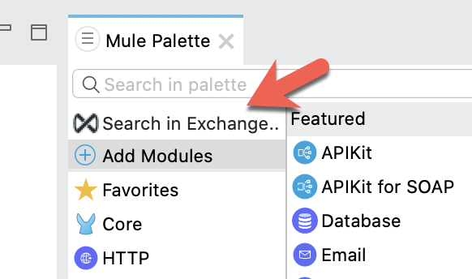
Search for Slack and select the Slack Connector - Mule 4. Click on Add and then click on Finish. Be sure to select the connector that doesn't have Community in the name.
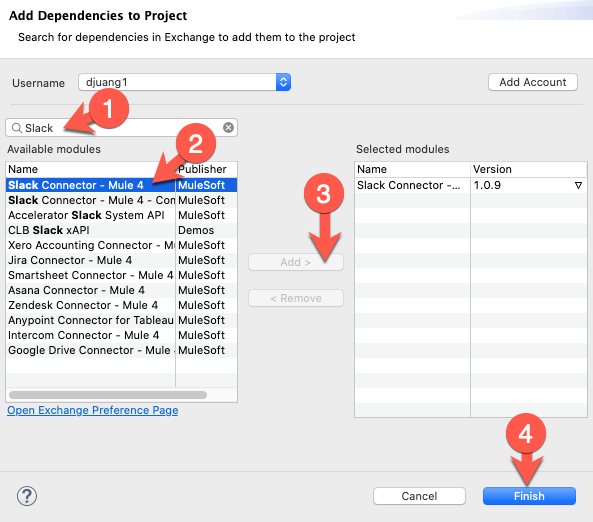
Additionally you can add the module as a dependency to your pom.xml file
<dependency>
<groupId>com.mulesoft.connectors</groupId>
<artifactId>mule4-slack-connector</artifactId>
<version>1.0.9</version>
<classifier>mule-plugin</classifier>
</dependency>From the Mule Palette, drag and drop the following components to match the flow below. You'll need the HTTP > Listener, Transform Message, Slack > Send Message, and the Transform Message components. We'll go back and configure everything later.
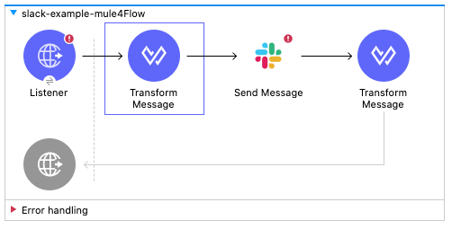
Before you set up the HTTP Listener, you need to create a keystore.jks file. Open a terminal window and paste and run the following command:
keytool -genkeypair -keystore keystore.jks -dname "CN=localhost, OU=Unknown, O=Unknown, L=Unknown, ST=Unknown, C=Unknown" -keypass password -storepass password -keyalg RSA -sigalg SHA1withRSA -keysize 2048 -alias mule -ext SAN=DNS:localhost,IP:127.0.0.1 -validity 9999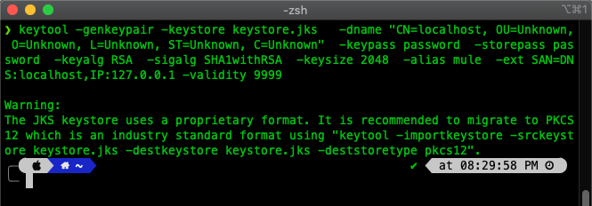
Navigate to the folder where you generated that keystore file and copy and paste it into the src/main/resources directory of the Mule project.
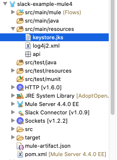
Now go back and select the HTTP Listener component in the flow we just created. If the Mule Properties tab doesn't open, click the Listener icon and click on the green plus sign to create a new Connector configuration.
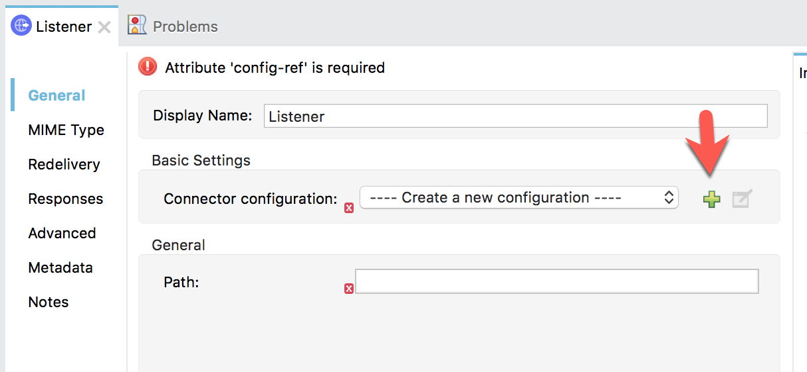
Under the General tab, and in the Connection section, change the Protocol: to HTTPS and then change the Port to 8082.
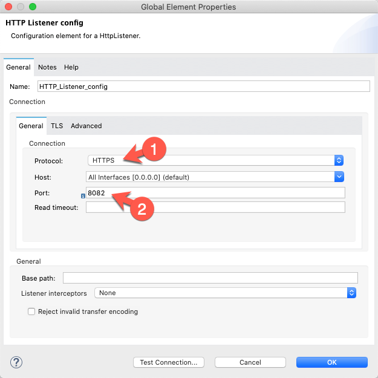
Click on the TLS tab and change the TLS Configuration dropdown to Edit inline
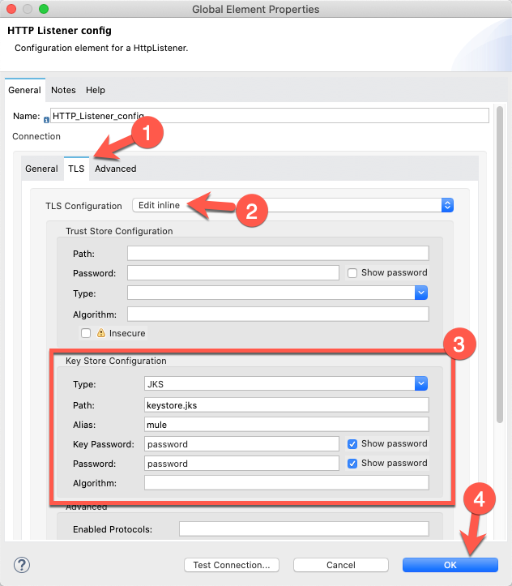
In the Key Store Configuration section, change the Type dropdown to JKS. Fill in the following fields:
Path | keystore.jks |
Alias | mule |
Key Password | password |
Password | password |
Click OK to close the dialog window and proceed to the next step.
Back in the Listener Mule properties tab, fill in the Path field with the value /send. Also fill in the Display Name field with the value /send.
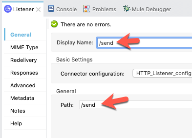
Let's configure the Send Message component to call Slack.
Select the Send Message component. If the Mule Properties tab doesn't open, click the Send Message icon and click on the green plus sign to create a new Connector configuration.
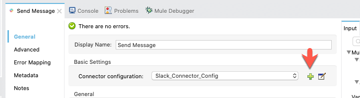
This is where the bulk of the configuration will be for calling the Slack API.
Under the General tab, and in the oauthAuthorizationCode section, fill in the Consumer key: and Consumer secret: field with the Client ID and Client Secret from the previous step from Slack. In the Scopes field, replace the default text with the following:
channels:read chat:write:botSee the screenshot below to see what it should look like.
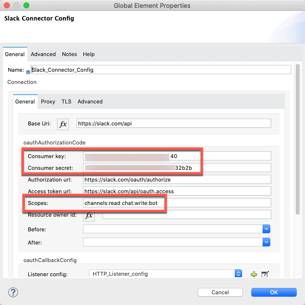
Next, scroll down and find the oauthCallbackConfig section. Fill in the Callback path: and Authorize path: fields to match the following screenshot below.
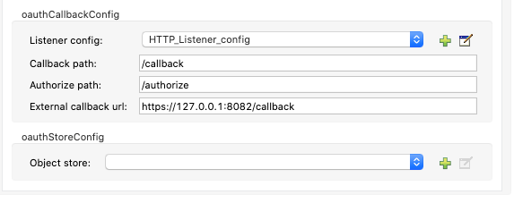
Callback path: | /callback |
Authorize path: | /authorize |
External callback url: | https://127.0.0.1:8082/callback |
Then click on OK to close the screen.
In this component, we're going to create the JSON message that we want to pass to the Send Message component. The message contains the channel that we want to send to the message as well as the message itself. For this lab, we're going to hard code the message (e.g. "Hello World!"). Double click on the Transform Message component and paste the following DataWeave script into the editor.
%dw 2.0
output application/json
---
{
channel: "demos",
text: "Hello World!"
}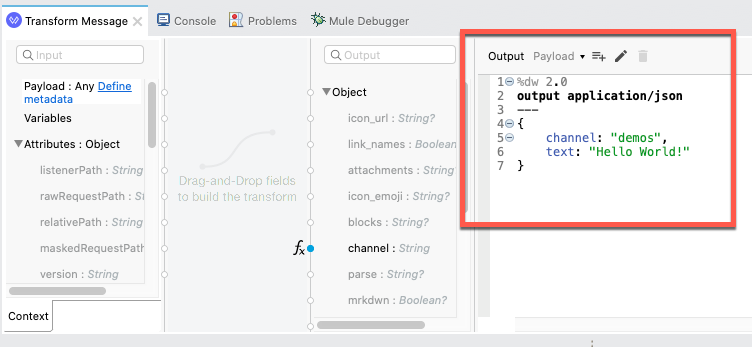
We're going to take the response from the Send Message operation and convert the output to JSON and return that back to the browser. Double click on the Transform Message component and paste the following DataWeave script into the editor.
%dw 2.0
output application/json
---
payload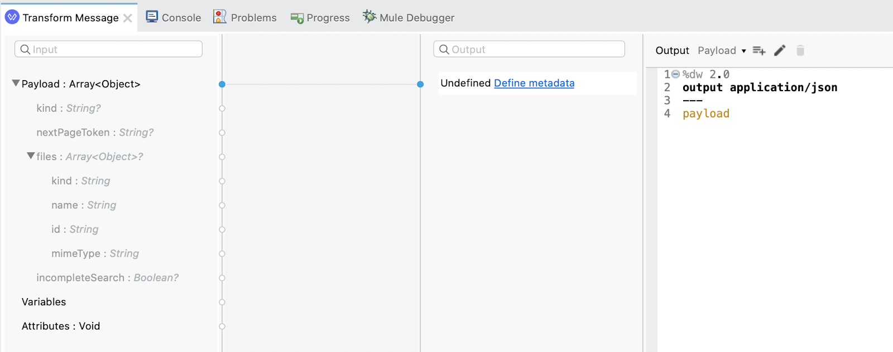
Now that everything has been configured, let's run the project and test the flow. Right-click on the canvas and click on Run project
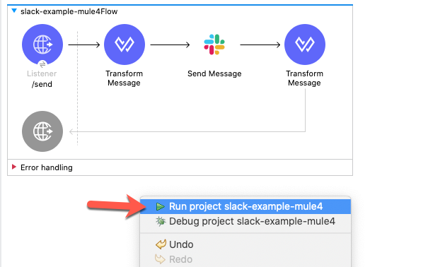
When the project is successfully deployed, switch to your browser and navigate to the following URL:
https://localhost:8082/authorizeIf configured correctly, you'll be redirected to the Slack workspace screen to allow the app access to the workspace.
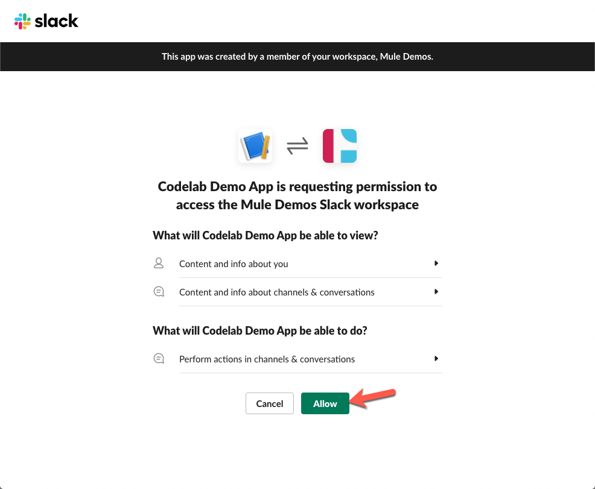
Once you click on Allow, you'll be redirected to this screen:
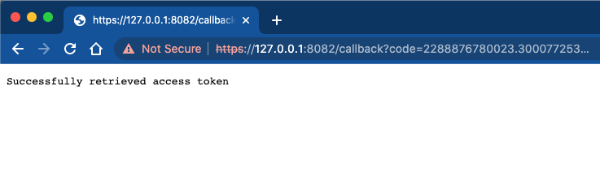
Open a new tab and navigate to the following URL:
https://localhost:8082/send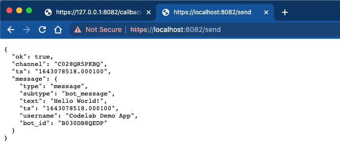
If everything was configured correctly, you should see a response from Slack letting you know that the message was sent successfully. Switch to Slack and navigate to the channel where you configured the application to write the message to and you see the message that we sent.
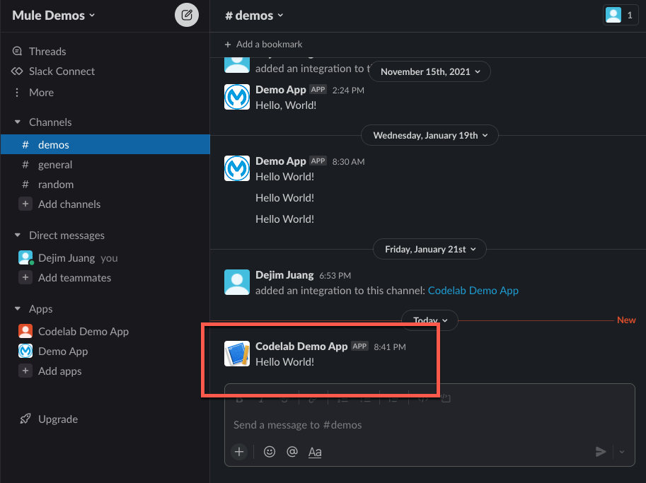
In this codelab you learned how to set up and use the Slack connector in Anypoint Studio.
We only covered using the Send Message operation but you can take what you learned and use any of the other operations that the Slack connector provides.